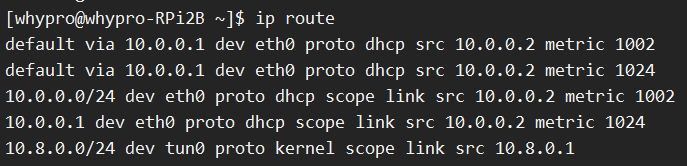
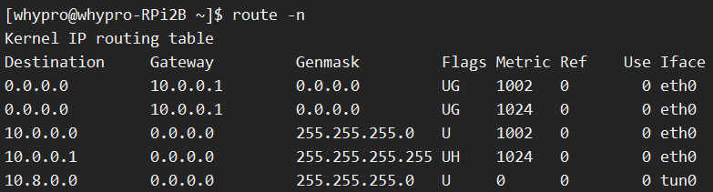

Linux 路由表简介
Linux 路由表管理主要通过 ip route 命令，早前的发行版可以用 route 或 netstat -r 命令，本质上是一样的，但因为前者功能更强大所以已逐渐取代后者。
下面两张图是笔者在自己的树莓派上分别使用 ip route 和 route -n 命令查看路由的输出结果：
ip route 命令：

route -n 命令：

一个 IP 包的寻路过程是通过目的 IP 去匹配路由条目，匹配过程是最长路径匹配，也就是说报文优选掩码最长的路由，比如 10.0.0.0/24 和 10.0.0.1/32，会优先匹配后者。
路由条目按照目标地址不同可以分为主机路由、网络路由和默认路由，下面我们按照这三种分类举例解释一下每种条目所代表的含义。
主机路由
我们首先看第 4 条路由：
ip route 输出格式：
1 | 10.0.0.1 dev eth0 proto dhcp scope link src 10.0.0.2 metric 1024 |
route 输出格式：
1 | Destination Gateway Genmask Flags Metric Ref Use Iface |
10.0.0.1和Destination: 10.0.0.1Genmask: 255.255.255.255代表目标地址是一个主机，直接端到端发出即可Flags: UH：U代表该条目为激活状态，H代表是一条主机路由Gateway 0.0.0.0和scope link表示不需要经过网关。如果目标主机不在本机网络内，添加时可以指定网关（这样的话就是Flags: UGH）proto dhcp表示这条路由规则通过 DHCP 获得，如果不指定，默认为proto boot（不显示）src 10.0.0.2dev eth0以及Iface eth0都表示经过哪个网卡（源 IP）发出metric表示路由距离，即到达指定网络所需的跳数Ref和Use分别表示路由项引用次数和被查询次数，可以不用关心
主机路由可以通过以下的命令添加：
1 | ip route add <ip> dev <device> |
或者
1 | route add -host <ip> dev <device> |
网络路由
我们看第 5 条路由：
ip route 输出格式：
1 | 10.8.0.0/24 dev tun0 proto kernel scope link src 10.8.0.1 |
route 输出格式：
1 | Destination Gateway Genmask Flags Metric Ref Use Iface |
这条路由代表的意思是所有目标地址是 10.8.0.0/24 网段的包都通过 tun0 这张网卡发出去（其实这张是 OpenV*N 创建的虚拟网卡）。
10.8.0.0/24和Destination: 10.8.0.0Genmask: 255.255.255.0表示目标地址是一个网段Gateway 0.0.0.0代表目标地址在本机所属网络内部，不需要通过网关，因此标记为Flags: U。如果目标主机不在本机网络内，添加时是可以指定网关的（对应Flags: UG）dev tun0和Iface tun0表示通过目标网卡发出去，如果没有指定网关（没有设置via x.x.x.x或者设置了Gateway: 0.0.0.0），那么可以根据需求指定为任意网卡proto kernel表示该路由条目是通过内核配置的src 10.8.0.1表示源地址，也就是tun0这张网卡的 IP 地址，使用ip route命令时src和dev指定其一即可，另外一个可以自动识别
再看第 3 条路由，和第 5 条很相似：
ip route 输出格式：
1 | 10.0.0.0/24 dev eth0 proto dhcp scope link src 10.0.0.2 metric 1002 |
route 输出格式：
1 | Destination Gateway Genmask Flags Metric Ref Use Iface |
表示目标地址如果属于 10.0.0.0/24 网段，都通过 eth0 这张网卡发出去。
网络路由可以通过以下的命令添加：
1 | ip route add <net> dev <device> |
或者
1 | route add -net <ip> netmask <netmask> dev <device> |
默认路由
如果目标地址在主机路由和网络路由中都没有找到，那么就会走默认路由，我们看第 1 条和第 2 条：
ip route 输出格式：
1 | default via 10.0.0.1 dev eth0 proto dhcp src 10.0.0.2 metric 1002 |
route 输出格式：
1 | Destination Gateway Genmask Flags Metric Ref Use Iface |
default via 10.0.0.1和Destination: 0.0.0.0Genmask 0.0.0.0Gateway 10.0.0.1表示这两条都会通过网关（Flags: UG）via 10.0.0.1表示发向10.0.0.1这个网关地址，dev eth0和Iface eth0必须是连接网关的网卡，如果网卡不在这个网段添加时会报错，所以不用担心 IP 和网卡设备不匹配
默认路由可以通过以下的命令添加：
1 | ip route add default dev <device> |
或者
1 | route add default dev <device> |
总结
Linux 路由表目标地址可以分为主机路由、网络路由和默认路由，根据掩码最长匹配原则依次匹配，每种路由都可以选择是否经过网关，如果经过网关，网卡设备必须指定为 IP 地址是同一网段的网卡，如果不需要经过网关，可以指定任意的网卡设备。